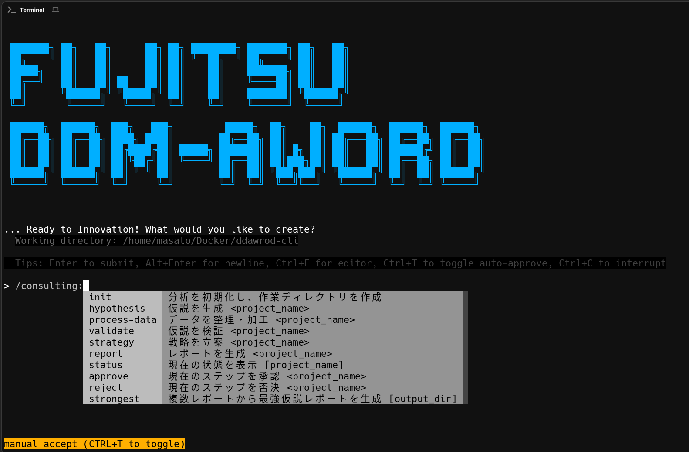
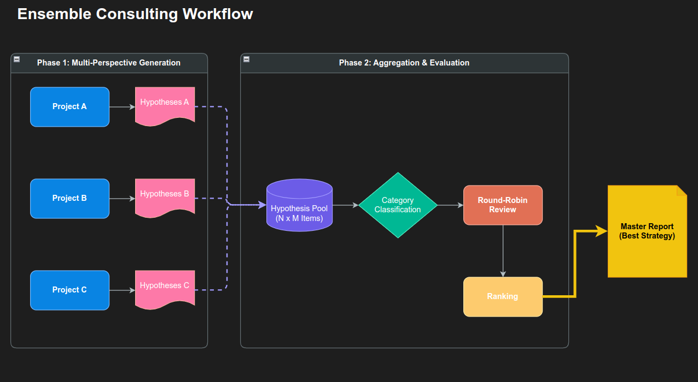

富士通の「DDM-AWord CLI」が提示する、人間とAIの新たな協働モデル。それは、単なる効率化ではない。経営判断の「質」そのものを変革する挑戦だ。
従来のAIは「賢い辞書」に過ぎなかった。しかし、この新しいCLIツールは、自ら仮説を立て、データを検証し、戦略を練る。まるで熟練のコンサルタントのように。

「AIに経営がわかるはずがない」――多くの経営者はそう考えるだろう。しかし、DDM-AWord CLIの開発チームは、その常識を覆そうとしている。
最大の特徴は「能動性（Agency）」だ。ユーザーが質問するのを待つのではない。システムはバックグラウンドで企業のデータを常時監視し、「この地域の売上が異常値を示している」「離職率と特定のプロジェクトに相関がある」といった兆候を自ら発見する。
この「仮説ファースト」のアプローチこそが、ビジネスの現場で真に求められているものだ。問題が顕在化してから対応するのではなく、予兆の段階で手を打つことが可能になるからだ。
コンサルタントの言葉には重みがあるが、AIの言葉には「ハルシネーション（嘘）」のリスクがつきまとう。DDM-AWordはこの問題を、極めてエンジニアリング的な手法で解決した。
すなわち、「Pythonコードの生成と実行」である。AIは自らの仮説を検証するために、その場で分析コードを書き、実行し、統計的な裏付けを取る。P値が有意でなければ、その仮説は棄却される。この厳格なプロセスを経た提案だけが、人間の目に触れることになる。
さらに興味深いのは、「アンサンブル・コンサルティング」という機能だ。これは、一人の天才AIに頼るのではなく、複数の異なる性格（ペルソナ）を持つAIエージェントに議論させる手法だ。

「楽観的な戦略家」「慎重な財務担当」「革新的なマーケター」。異なる視点を持つエージェントたちが、互いの案を批判し、ブラッシュアップする。この「デジタルな合議」によって、バイアスを排除し、より堅牢な戦略が導き出される。
DDM-AWord CLIは、AIを「ツール」から「パートナー」へと昇華させた。それは人間の直感を代替するものではなく、データという客観的な光で、人間の意思決定を強力に補完するものだ。